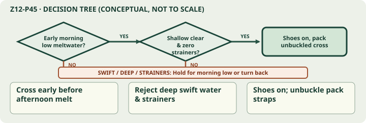

Z12-P45 · Extreme environments · New manuscript
Assess cold fast snowmelt stream crossings without risking foot entrapment
Evaluate swift mountain streams safely and recognize when high water requires turning back or waiting for morning lows.
When it applies · Unbridged mountain creeks and spring/summer glacial or snowmelt crossings.
Equipment · Sturdy footwear worn across (never barefoot), trekking poles for third-point balance and unbuckled pack hip belt/sternum strap.

Actions
- Time glacial and snowmelt stream crossings for EARLY MORNING—afternoon sun melts high snowpack rapidly, turning a calm ankle-deep morning creek into a roaring waist-deep torrent by 4 p.m.[X10, W25, E04]
- Scout carefully from the bank BEFORE stepping in: reject any crossing with fast waist-deep flow, rolling rocks audible underneath, murky silty water hiding holes, slippery logs, waterfalls/strainers (downed trees) immediately downstream or water above knee depth in swift current.[N10, T07, X10]
- On a verified shallow, manageable crossing ONLY: keep sturdy shoes ON (protecting feet from slick rock cuts), UNBUCKLE pack hip-belt and sternum straps (so a heavy pack cannot pin you underwater if you slip) and face slightly upstream using poles or linked group support.[N10, E11, ED]
Failure recognition · Stepping into a rushing thigh-deep icy snowmelt stream at 3 p.m. with a heavy backpack buckled tightly around the waist and a logjam thirty feet downstream.[N10, X10, X02]
Verify · Confirm clear shallow footing, zero downstream log strainers/drops, shoes on and pack straps unbuckled before stepping off the bank.[N10, ED]
Stop or change course · Fast murky floodwater, water above knee depth in swift current, downstream log strainers or cold-water shock risk stops crossing—camp safely on the near bank until morning lows or turn back.[N10, T07, X02]
Evidence and editorial notes
- E04 · NWS · Flood Safety: Key Points for Camping and Hiking (agency PDF)
- Section: Before and during camping; know your surroundings · Conditions: Stream valleys and runoff channels subject to flash flooding
Support: Choose higher ground away from water channels. Rain far upstream can drive rapid flooding.
Limitations: Dry streambeds and gentle swales can flood rapidly without local rainfall. · Conflicting evidence: None; aligns with NWS-FLOOD.
Editorial note: Core hydrological exclusion rule for shelter placement. · Specialist reviewer: Emergency management and hydrology
Primary source · checked 2026-11-24 - E11 · NPS · Hike Smart (current web edition)
- Section: Plan your hike; Stay together · Conditions: Groups on hiking routes
Support: Choose a route suited to the group's abilities and hike at a pace that keeps the group together.
Limitations: Fast hikers moving ahead at junctions is a leading driver of preventable separation. · Conflicting evidence: None; aligns with SAR prevention principles.
Editorial note: Core reference for group accountability and pacing cards. · Specialist reviewer: Group leaders and search and rescue
Primary source · checked 2026-11-24 - N10 · NWS · Turn Around Don't Drown (current web edition)
- Section: Turn Around Don't Drown > Flooded Crossings and Terrain Detours · Conditions: Navigating around flooded streams, washes and submerged roads
Support: Water barriers and flooded crossings conceal washed-out banks, swift undercurrents and deep holes; detour along verified dry high-ground routes or hold in a safe elevated spot.
Limitations: Applies equally to foot and vehicle navigation. · Conflicting evidence: Aligns with B014-P12 and T07.
Editorial note: Connects navigation rerouting to flood and water-barrier boundaries. · Specialist reviewer: Search and rescue and emergency management
Primary source · checked 2026-11-24 - T07 · FEMA · Flood Hazard Information Sheet (agency PDF)
- Section: How to stay safe when a flood threatens; take an active role · Conditions: U.S. household flood preparedness and evacuation
Support: Prepare contacts, medication and supplies. Heed evacuation instructions and avoid flooded roads.
Limitations: Six inches of moving water can knock down an adult; shallow-looking crossings hide road washouts. · Conflicting evidence: None; aligns with NWS-FLOOD.
Editorial note: Supports flood turnaround and evacuation decision thresholds. · Specialist reviewer: Emergency management
Primary source · checked 2026-11-24 - W25 · USGS · Snowmelt Runoff and the Water Cycle (current web edition)
- Section: Snowmelt Runoff and the Water Cycle · Conditions: Late-winter and spring snowpack runoff and melting snow
Support: Snowpack accumulates airborne deposition and surface debris over winter and releases concentrated meltwater runoff during thaws, altering stream turbidity and flow rapidly.
Limitations: Clean-looking snow can still contain microbial or surface contaminants from deposition or wildlife. · Conflicting evidence: None; reinforces snow source screening and seasonal runoff shifts.
Editorial note: Supports seasonal snow/ice water cards and meltwater screening. · Specialist reviewer: Hydrology and cold-weather operations
Primary source · checked 2026-11-24 - X02 · Minnesota DNR · Cold Water Safety (current web edition)
- Section: Cold Water Safety > Cold Shock, Swim Failure and Hypothermia · Conditions: Immersion in water below 70°F (especially below 50°F / winter ice water)
Support: Cold shock can cause involuntary gasping and rapid breathing. Grip and swimming may deteriorate rapidly; flotation and early rescue matter. Onset and severity vary.
Limitations: Strong swimmers drown rapidly from cold shock and muscle incapacitation without flotation. · Conflicting evidence: Refutes myth that hypothermia is the only immediate cold-water killer.
Editorial note: Core physiological evidence for Z12 ice-breakthrough and maritime immersion cards. · Specialist reviewer: Cold-water rescue and wilderness medicine
Primary source · checked 2026-11-24 - X10 · NPS · Rocky Mountain Safety (High-Elevation and Mountain Travel) (current web edition)
- Section: Rocky Mountain Safety > Afternoon Lightning, Rapid Cooling and Steep Terrain · Conditions: High-elevation ridges, alpine passes and mountain weather
Support: Mountain temperatures drop sharply with elevation and sunset, afternoon thunderstorms build rapidly over exposed ridges (requiring early starts and turning back below treeline), and steep snowfields conceal runout hazards.
Limitations: Clear morning skies routinely shift to severe lightning and sleet by early afternoon. · Conflicting evidence: None; integrates with E07, E23 and CDC-ALT.
Editorial note: Grounds mountain timing, treeline retreat and elevation-cooling cards. · Specialist reviewer: Mountain safety and meteorology
Primary source · checked 2026-11-24
Source lineage · NWS flood safety and NPS mountain safety; new manuscript · Classification · New manuscript.